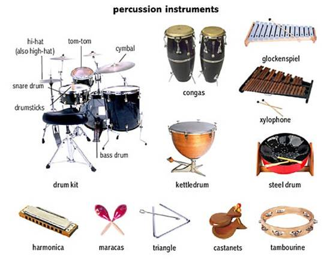
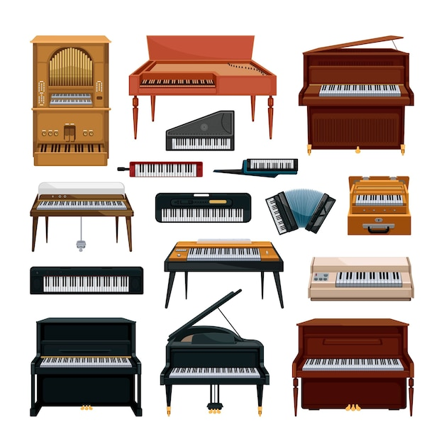

К духовым инструментам относятся современные флейта, гобой, кларнет, фагот, саксофон со всеми их разновидностями, старинные блокфлейта, шалмей, шалюмо и др., а также ряд народных инструментов, таких как балабан, дудук, жалейка, свирель, зурна, альбока.

Клавишные музыкальные инструменты разделяются на следующие виды:
- струнные (ударно клавишные и щипково-клавишные), к ним относятся: фортепьяно, челеста, клавесин и др.;
- духовые (язычковые, клавишно-духовые), к ним относятся: фисгармония, баян, аккордеон, мелодика, орган и его разновидности;
- электромеханические, к ним относятся: электропиано, клавинет;
- электронные, к ним относится электронное пианино, синтезатор.
